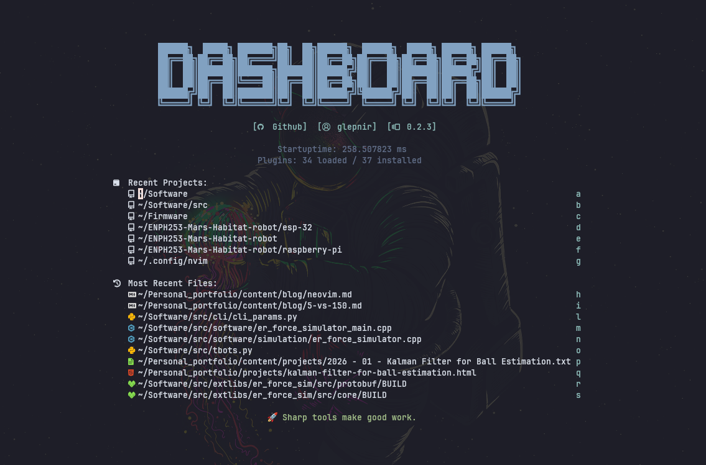

How Neovim changed my life
Making coding feel like playing a video game

I started coding in high school. Coding games, tools, etc, just messing around, honestly wasn't that into it. Software was just the most accessible compared to elec or mech, as anyone with a computer can do and learn it. Personally, I liked building stuff more, actual physical things, so I figured mech eng was the move. Real parts, real torque, stuff you could hold and see working.
That's why my focus in my first year in UBC engineering was mechanical. I joined a 3D printing design team, and worked on my CAD design skills, physics intuition, and manufacturing skills.
But a year in I hit this wall. Every cool thing I designed eventually got handed off to some controller or chip that some software person had to deal with, and I didn't understand any of it. The mechanical part wasn't the hard part anymore. The software was. So the ceiling on mech just felt low, like I could only get so far before I was blocked by something I couldn't touch.
So I went back to coding, but this time not because I was curious, more because I had to. And ngl the first while back was kind of a slog. I wasn't feeling it. Felt like going back to something I'd already quit once.
What actually got me through it
Weirdly, neovim. I know that sounds dumb but hear me out.
Once I actually got fast in it, no mouse, just moving through code like I knew exactly where I was going, something clicked. Coding stopped feeling like typing and started feeling like using a tool I actually built for myself. Kind of the same feeling as machining a part and having it fit perfect on the first try.
Especially after a few months, my computer felt like a natural extension of my body. I tried to configure my entire stack such that I can operate my computer without a mouse. For example, installing the tridactyl extension on firefox. Quite funnily, my linux computer was broken at that time as the cursor would freeze often. It ended up being a necessity for computer operation (I fixed it though lol).
Where it led
After that it wasn't a backup plan anymore, I actually wanted to get better at it.
And robotics software ended up being the thing that made sense of both sides, the mechanical intuition for how stuff actually moves and behaves, plus software that could finally keep up with what I wanted to build. Especially after working on sensor fusion, control and navigation projects, I find robotics software the path I wanna pursue.
And it's all, because of neovim.